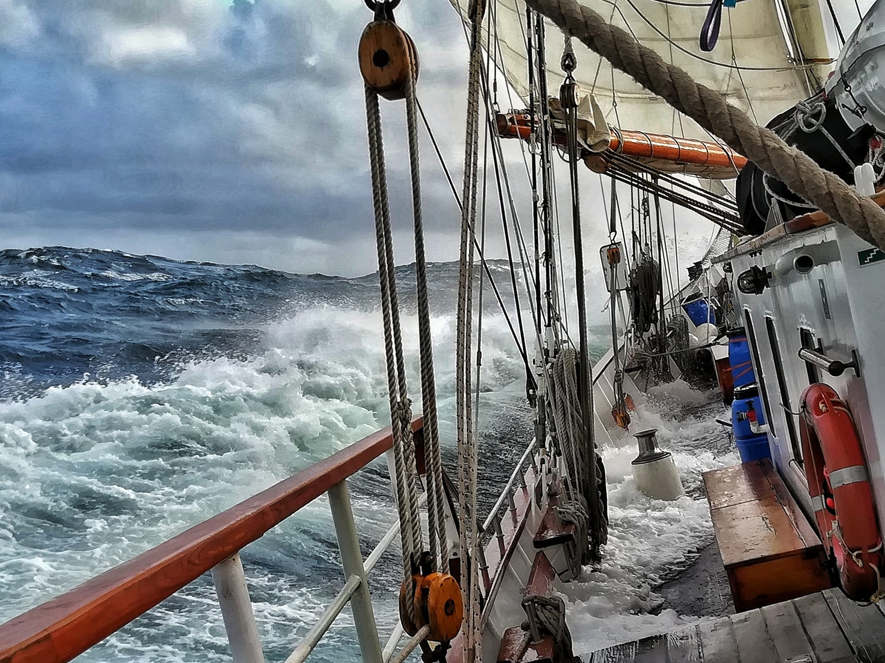
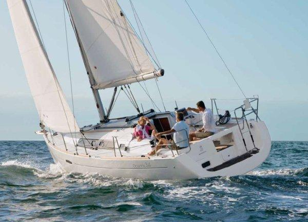
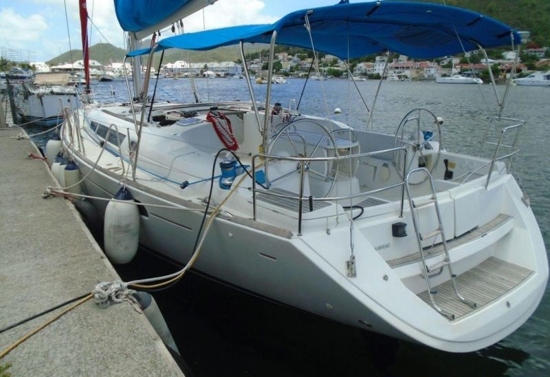

Welcome to goHoliday!
What is goHoliday?
goHoliday is an award winning travel agency that is perfect for people looking for a quick, stress free getaway. Our friendly travel agents are more than happy to work with you and find out exactly
what sparks that adventurous spirit and makes you want to get out and see the world. No matter what you choose you'll end up somewhere you've never been before and make some lasting memories and friendships
that you can take home and treasure forever. With a range of options for any budget, you're sure to find something to fit your needs.
- North Sea Crossing
This 14 day sailing trip will take you into far into the ocean blue and let you experience what it's like to be a sailor exploring the world for the first time. We'll travel from picturesque Stavanger, Norway across
the North Sea until we reach the English Coast. From here we'll continue down past the White Cliffs of Dover, have a quick break on the Isle of Skye, before finally making land in Weymouth, England. Along the way you'll
develop valuable teamwork and leadership skills as you learn how to set and furl sails, navigate, helm, and care for the ship as well as experiencing life on the ocean. You'll truly become part of the crew as you take a
hand as a watch member and watch the sun rise over the ocean. And of course, what better ways to develop lasting friendships than on a sailing ship. Don't wait, sign up now! Limited spots available.

- Crewmans's Capers
This sailing adventure is going to conclude with a neat certificate presented to you as a competent crew member! Our experienced trainers will take you out on the water on a five day action packed course to fill you in
on everything you need to know about how to sail a ship. You will learn about life on board a boat, navigational theory, and safety including the use of flares, liferafts, and man overboard procedures. A competent crew
qualification is internationally recognised and includes crucial knowledge for those wishing to spend more time at sea.

- Captain's Capers
This sailing trip will teach you how to be a skipper, how to be the one in charge of a sailing vessel. You'll learn valuable skills such as weather forcasting and ship maintenance, extensive navigational theory and port
piloting. Experienced trainers will take you on a five day sailing trip anchoring at a different site every evening, giving you plenty of opportunities to fine tune your boat handling skills. The course ends with a
practical assessment which will grant you an internationally recognised Day Skipper qualification. This is an essential course for those looking to take on more responsibility aboard a sailing vessel.
